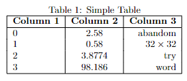
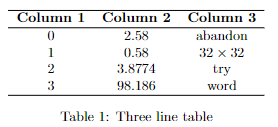
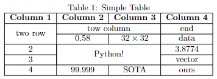
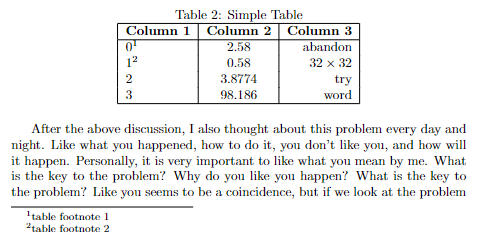
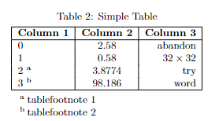
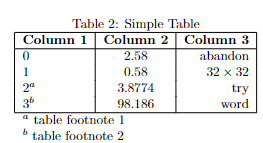

表格
Latex
中构建表格的基本方法和一些注意事项、拓展功能、个人遇到过的一些问题。表格是
Latex 文档中很常用的一个组件，可以写论文、记笔记必不可少要用到的。
基础表格
在 Latex 中创建一个基本的表格代码如下：
1 2 3 4 5 6 7 8 9 10 11 12 13 14 \begin {table}[h!] \centering \caption {Simple Table} \begin {tabular}{|l|c|r|} \hline \textbf {Column 1} & \textbf {Column 2} & \textbf {Column 3} \\ \hline 0 & 2.58 & abandon \\ 1 & 0.58 & $ 32 \times 32$ \\ 2 & 3.8774 & try \\ 3 & 98.186 & word \\ \hline \end {tabular} \end {table}
效果如下图所示

image-20220928133715650
具体内容如下：
首先，table
是绘制表格必要的环境，如果是双栏需要跨栏则是 table*
环境，括号内的是位置参数设置（详情可以参考 “『Latex』基础”）
\centering 是将表格居中caption 是表标题，如果需要标题在表格下面则将该栏放在
tabular 后面tabular 是表格的具体绘制\label{table:first}
是表格的一个标志，可以在文中其他位置使用 \ref{table:first}
进行引用
tabular
{|l|c|r|} 是格式控制符
l 表示左对齐，c
表示居中对齐，r 表示右对齐一个 l, c, r 就代表表格中的一列
|
表示表格中的竖线分隔，如果不写那么列与列之间就没有竖线分隔开 \hline
是表格中横线分隔，同理如果不写那行与行之间就没有横线分隔开如果不想要整行的横线，可以使用 \cline{0-2}
绘制局部的横线，参数中的数字表示列号，从 1 开始计算
表格中的数据使用 &\\
了解了以上的知识，就能绘制出基础的表格内容了，例如常用的三线表可以绘制如下
1 2 3 4 5 6 7 8 9 10 11 12 13 14 \begin {table}[h!] \centering \begin {tabular}{ccc} \hline \textbf {Column 1} & \textbf {Column 2} & \textbf {Column 3} \\ \hline 0 & 2.58 & abandon \\ 1 & 0.58 & $ 32 \times 32$ \\ 2 & 3.8774 & try \\ 3 & 98.186 & word \\ \hline \end {tabular} \caption {Three line table} \end {table}
效果如下

image-20220928134715595
合并单元格
在 excel 中一个很常用的功能是合并单元格，在 latex
也可以将单元格进行合并，首先需要导入包：
合并行与合并列的格式和示例如下
1 2 3 4 5 \multirow {number of rows}{width}{text}\multicolumn {number of columns}{alignment}{text}\multirow {2}{*}{two row}\multicolumn {2}{|c|}{tow column}
说明：
\multirow
的三个参数分别是：合并行数、行宽（*
表示自动宽度）、具体内容\multicolumn
的三个参数分别是：合并列数、列格式控制符（只应该有一个字符，主要控制左右是否有竖线）、具体内容注意：合并行命令是以所在行向下进行合并的，下面的行对应位置需要留空
注意：合并列命令是以所在列向右进行合并的，右边对应位置不再需要留空
如果要合并多行多列呢，那就需要 \multirow 和
\multicolumn 配合嵌套使用了，具体用法可以参考下面例子：
1 2 3 4 5 6 7 8 9 10 11 12 13 14 15 16 17 18 19 \begin {table}[h!] \centering \caption {Simple Table} \begin {tabular}{|c|c|c|c|} \hline \textbf {Column 1} & \textbf {Column 2} & \textbf {Column 3} & \textbf {Column 4} \\ \hline \multirow {2}{*}{two row} & \multicolumn {2}{c|}{tow column} & end \\ \cline {2-4} & 0.58 & $ 32 \times 32$ & data \\ \hline 2 & \multicolumn {2}{|c|}{\multirow {2}{*}{Python!}} & 3.8774 \\ \cline {1-1}\cline {4-4} 3 & \multicolumn {2}{|c|}{} & vector \\ \hline 4 & 99.999 & SOTA & ours \\ \hline \end {tabular} \end {table}
效果如下所示

image-20220928145320341
注意：\multicolumn 需要在多行的位置进行空的占位
嵌套图片
将表格用于嵌套图片排版，可以用以下方法：
1 2 3 4 5 6 7 8 9 10 11 12 13 14 15 16 17 18 19 20 21 22 23 24 25 26 27 28 29 30 \begin {table*}[htb] \centering \resizebox {\linewidth }{!}{ \begin {tabular}{|c|c|c|c|} \hline Dataset & ResNet50 & HAFN & HAFN with cluster (ours) \\ \hline first line & \begin {minipage}[b]{0.3\columnwidth } \centering \raisebox {-.5\height }{\includegraphics [width=\linewidth ]{figures1.pdf}} \end {minipage} & \begin {minipage}[b]{0.3\columnwidth } \centering \raisebox {-.5\height }{\includegraphics [width=\linewidth ]{figures2.pdf}} \end {minipage} & \begin {minipage}[b]{0.3\columnwidth } \centering \raisebox {-.5\height }{\includegraphics [width=\linewidth ]{figures3.pdf}} \end {minipage} \\ \hline \end {tabular} } \caption {caption} \label {Fig:Resnet50_ vis} \end {table*}
其中 \raisebox
主要是强制图片上下居中对齐，如果不加旁边其他单元格的文字就会在单元格的底部了。
脚注
页末脚注
这种其实和常规脚注差不多，用 \footnotemark[id]
标记脚注，用 \footnotetext[id]{footnote text}
给出具体脚注内容即可
示例代码
1 2 3 4 5 6 7 8 9 10 11 12 13 14 15 16 \begin {table}[h!] \centering \caption {Simple Table} \begin {tabular}{|l|c|r|} \hline \textbf {Column 1} & \textbf {Column 2} & \textbf {Column 3} \\ \hline 0\footnotemark [1] & 2.58 & abandon \\ 1\footnotemark [2] & 0.58 & $ 32 \times 32$ \\ 2 & 3.8774 & try \\ 3 & 98.186 & word \\ \hline \end {tabular} \end {table}\footnotetext [1]{table footnote 1}\footnotetext [2]{table footnote 2}
效果如下

image-20221012145251404
表格后脚注
更多时候我们可能更希望脚注就在表格下方而不是在页面最下方。

image-20221012150626700
方法一 ：使用 threeparttable 包
首先需要导入包
1 \usepackage {threeparttable}
然后将表格使用 threeparttable 环境包围起来，在表格中使用
\tnote{id} 作为标记，后面用 tablenotes
列出脚注的具体内容，语法类似无序列表，示例代码如下：
1 2 3 4 5 6 7 8 9 10 11 12 13 14 15 16 17 18 19 20 \begin {table}[h!] \centering \begin {threeparttable}[b] \caption {Simple Table} \begin {tabular}{|l|c|r|} \hline \textbf {Column 1} & \textbf {Column 2} & \textbf {Column 3} \\ \hline 0 & 2.58 & abandon \\ 1 & 0.58 & $ 32 \times 32$ \\ 2 \tnote {a} & 3.8774 & try \\ 3 \tnote {b} & 98.186 & word \\ \hline \end {tabular} \begin {tablenotes} \item [a] tablefootnote 1 \item [b] tablefootnote 2 \end {tablenotes} \end {threeparttable} \end {table}
方法二 ：表格内脚注
就是我们手动标记，然后表格后多加几行空白行，然后将空白行合并为一个空白的单元格当做脚注具体内容，需要用到
\multicolumn，具体可以参考示例代码：
1 2 3 4 5 6 7 8 9 10 11 12 13 14 15 16 \begin {table}[h!] \centering \caption {Simple Table} \begin {tabular}{|l|c|r|} \hline \textbf {Column 1} & \textbf {Column 2} & \textbf {Column 3} \\ \hline 0 & 2.58 & abandon \\ 1 & 0.58 & $ 32 \times 32$ \\ 2$ ^ {a}$ & 3.8774 & try \\ 3$ ^ {b}$ & 98.186 & word \\ \hline \multicolumn {3}{l}{$ ^ a$ table footnote 1} \\ \multicolumn {3}{l}{$ ^ b$ table footnote 2} \end {tabular} \end {table}
效果与前一种方法基本上没什么区别

image-20221012151813980
调整宽度
可能是太多列或者部分单元格文字太多（可以用 \newline
换行控制单元格内文字量）导致提示
overfull \hbox (xxx pt) too wide)
解决方法是在外面套上 \resizebox
自适应的调整表格宽度，但会导致文字变小（当然，如果表格内容不多也会放大）
1 2 3 4 5 \resizebox {\linewidth }{!}{ \begin {tabular}{cccccccccccccccccc} ... \end {tabular} }
表格换页
有时候表格太长导致一页显示不完，但表格不会自动换页，后面部分就看不到了。我们需要手动让表格自动换页
导入 \usepackage{longtable} 然后将 tabular
换成 longtable 即可
还有另一种方法，但需要改动表格基本格式，后面再记录